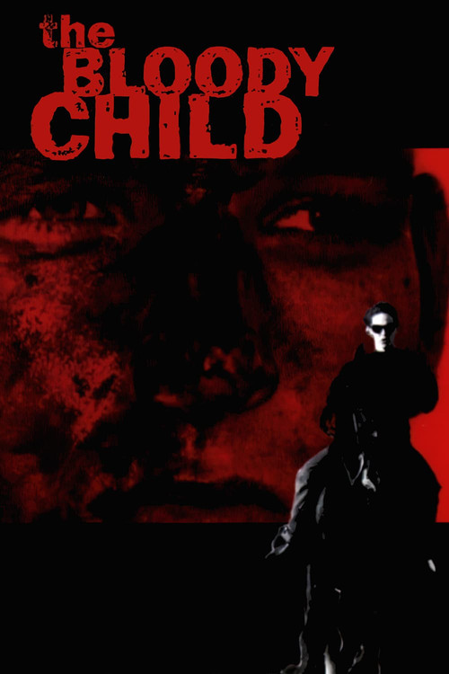
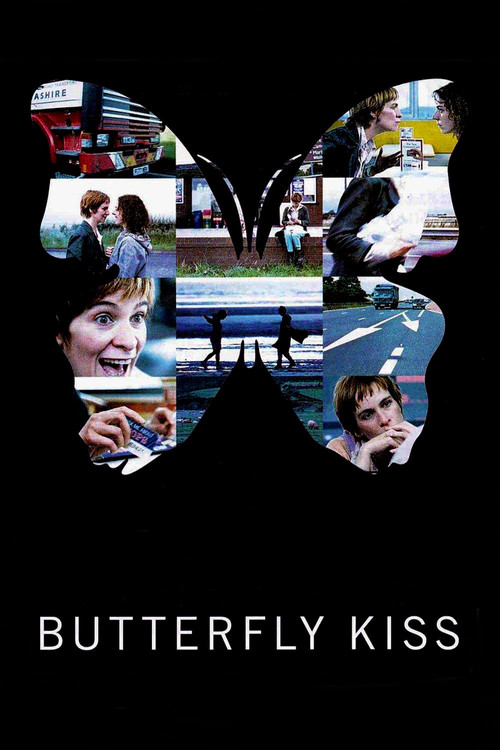
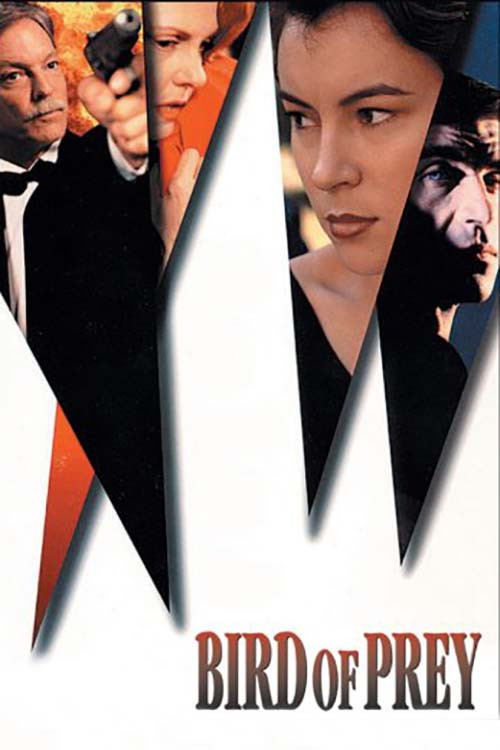
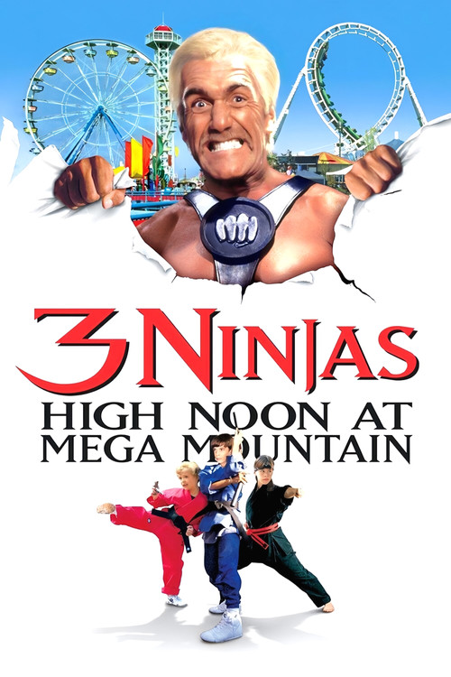
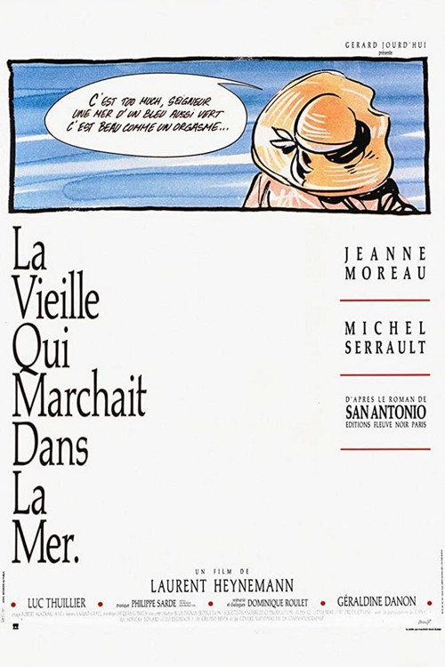
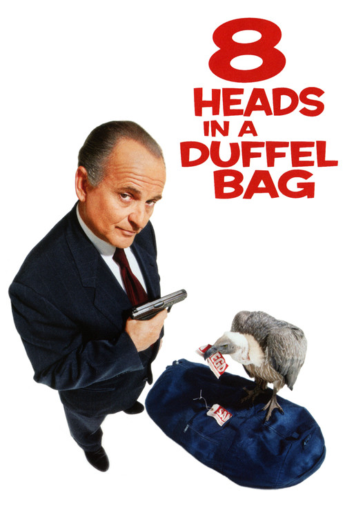

#1
F
Hozircha tavsif mavjud emas.
Saqlab qo‘yilgan filmlar ro‘yxati.
Hozircha tavsif mavjud emas.

Austrian mountaineer Heinrich Harrer journeys to the Himalayas without his family to head an expedition in 1939. But when World War II breaks out, the arrogant…

This film was inspired by a real event—a young US Marine, recently back from the Gulf War, was found digging a grave for his murdered wife in the middle of the…
Hozircha tavsif mavjud emas.

Deeply mentally unbalanced drifter Eunice roams grim northern Britain committing psychosexual serial murders of both men and women while ostensibly searching f…

As a boy, Dominik watched an American crime boss murder his father, a police officer fighting corruption in Sofia, Bulgaria. Years later, he attempts to avenge…
Hozircha tavsif mavjud emas.

Three young boys, Rocky, Colt and Tum Tum together with their neighbor girl, computer whiz Amanda are visiting Mega Mountain amusement park when it is invaded …

A con artist couple takes a young, handsome petty thief under their wing, but jealousies flare when the woman develops an interest in him.

Mafia hitman Tommy Spinelli is flying to San Diego with a bag that holds eight severed heads, which he's bringing to his superiors to prove that some troubleso…